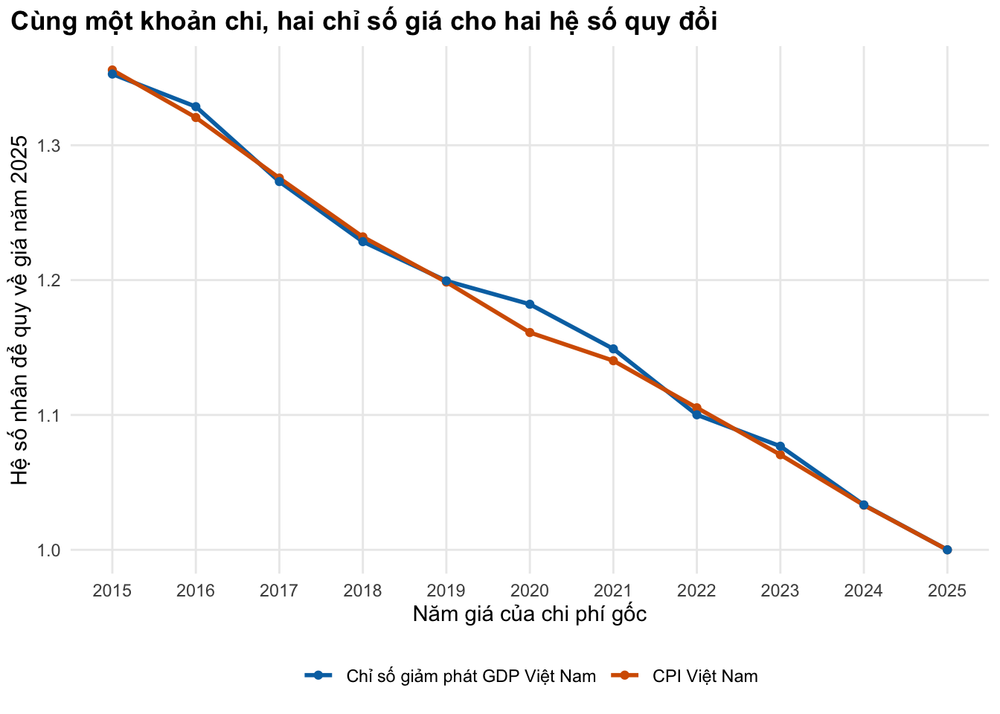

Dùng chỉ số giá, tỷ giá và sức mua tương đương để đưa mọi chi phí về VNĐ của cùng một năm, bằng hàm R kiểm tra được
Vì sao bạn nên quan tâm?
Bạn mở hai bài báo để lấy chi phí cho mô hình: một đợt nằm viện vì lao kháng thuốc ở Bệnh viện Phổi Trung ương, trung bình US$1,407 (giá 2024), và một đợt ICU thở máy vì nhiễm khuẩn huyết ở TP.HCM, US$2,860 (giá 2019, trung vị). Đổi bằng tỷ giá của nghiên cứu rồi quy về giá 2025, đợt ICU là 79.0 triệu VNĐ, bằng 14.9 tháng lương tối thiểu vùng I. Từ 2019 đến 2025, mặt bằng giá tiêu dùng ở Việt Nam tăng 19.9%, nên bát phở 40,000 VNĐ hôm nay chỉ tương đương khoảng 33,400 VNĐ năm 2019. Cộng hai con số như trên mà không điều chỉnh là cộng hai đơn vị khác nhau. Bài này giúp bạn chọn chỉ số giá, tỷ giá và thứ tự quy đổi để mọi chi phí về VNĐ năm 2025.
Mục tiêu học tập
Sau bài này, bạn có thể:
Quy một chi phí từ mặt bằng giá của năm này sang năm khác bằng chỉ số giá tiêu dùng (CPI) hoặc chỉ số giảm phát GDP (GDP deflator).
Đổi tiền giữa VNĐ, USD và đô la quốc tế (international dollar, quy theo PPP), và biết khi nào dùng tỷ giá thị trường, khi nào dùng PPP.
So sánh hai cách điều chỉnh chính (điều chỉnh theo giá Việt Nam rồi đổi tiền, hoặc điều chỉnh theo giá Mỹ trong USD rồi đổi tiền) và chọn cách phù hợp.
Viết và kiểm tra một hàm R đưa mọi chi phí về một năm tham chiếu chi phí (cost year), dừng lại khi thiếu số liệu thay vì đoán.
Ý chính
Mỗi chi phí cần hai nhãn: đơn vị tiền và năm tham chiếu chi phí (cost year). Chuẩn hóa là đưa mọi chi phí về một cặp nhãn duy nhất, ở đây là VNĐ năm 2025.
CPI Việt Nam và tỷ giá chính thức của khóa học nằm ở một chỗ duy nhất, _shared/data/vn_cpi_fx.csv; hàm dùng chung inflate_vnd() làm phép quy đổi bằng CPI.
Công thức duy nhất cần nhớ: \(C_{\text{đích}} = C_{\text{gốc}} \times I_{\text{đích}} / I_{\text{gốc}}\), với \(I\) là một chỉ số giá.
CPI đo giá giỏ hàng tiêu dùng; chỉ số giảm phát GDP đo giá mọi hàng hóa sản xuất trong nước. Cả hai là chỉ số chung, không riêng cho y tế; nhiều nước công bố thêm chỉ số giá nhóm chăm sóc y tế, đáng thử làm độ nhạy khi có. Chọn một chỉ số, ghi rõ, thử chỉ số kia.
Chi phí phát sinh tại Việt Nam: đổi sang VNĐ theo tỷ giá năm gốc, rồi quy về giá năm đích bằng chỉ số Việt Nam. Đổi USD theo tỷ giá năm nay mà bỏ qua chênh lệch giá giữa các năm là sai.
Thứ tự “đổi tiền rồi điều chỉnh giá” và “điều chỉnh giá rồi đổi tiền” cho kết quả khác nhau, vì tỷ giá không đi cùng chênh lệch lạm phát giữa hai nước (Turner và c.s. 2019).
Đô la quốc tế (PPP) dùng để so sánh giữa các nước; USD theo tỷ giá thị trường dùng cho hàng hóa mua bằng ngoại tệ và ngân sách tài trợ.
Khi năm đích chưa có số liệu (chỉ số giá Mỹ hay tỷ giá năm gần nhất thường chưa công bố), hàm phải báo lỗi; số thay thế, nếu dùng, phải được gắn cờ và viết ra.
Nội dung
Vì sao phải điều chỉnh
Bài 1 kết thúc với các số liệu chi phí Việt Nam ở hai năm tham chiếu chi phí, đều tính bằng USD theo tỷ giá do nhóm nghiên cứu chọn (Ngo và c.s. 2026; Hung và c.s. 2022). Đặt chúng cạnh nhau trong một mô hình VNĐ năm 2025 mà không điều chỉnh là cộng hai thứ khác đơn vị. Bảng kiểm báo cáo CHEERS 2022 dành riêng một mục cho đơn vị tiền, năm tham chiếu chi phí và cách quy đổi (Husereau và c.s. 2022), vì đây là chỗ người đọc không tự kiểm tra lại được.
Chỉ số giá
Một chỉ số giá \(I_t\) cho biết mặt bằng giá năm \(t\) so với năm gốc của chỉ số. Quy chi phí \(C\) từ năm \(s\) sang năm \(t\):
\[
C_t = C_s \times \frac{I_t}{I_s}.
\]
Năm gốc của chỉ số (ví dụ 2010 = 100) không quan trọng vì nó triệt tiêu trong tỷ số. Ngân hàng Thế giới công bố cả CPI lẫn chỉ số giảm phát GDP cho Việt Nam trong bộ chỉ số phát triển thế giới (WDI) (World Bank 2026a, 2026c). CPI phản ánh giá hàng tiêu dùng mà hộ gia đình mua; chỉ số giảm phát GDP bao trùm mọi hàng hóa và dịch vụ sản xuất trong nước. Nghiên cứu chi phí ICU tại TP.HCM dùng chỉ số giảm phát GDP để đưa chi phí 2017–2019 về giá 2019 (Hung và c.s. 2022); một số nghiên cứu khác dùng CPI. Hai lựa chọn đều chấp nhận được nếu được ghi rõ.
Tỷ giá thị trường và sức mua tương đương
Tỷ giá thị trường (VNĐ/USD, bình quân năm) cho biết cần bao nhiêu VNĐ để mua một USD. Hệ số sức mua tương đương (PPP) cho biết cần bao nhiêu VNĐ để mua ở Việt Nam lượng hàng mà một đô la mua được ở Mỹ. Ở nước thu nhập trung bình như Việt Nam, hệ số PPP nhỏ hơn nhiều so với tỷ giá, nên cùng một khoản VNĐ đổi ra được nhiều đô la quốc tế hơn USD. Bài của Turner và cộng sự bàn cả hai cách quy đổi (Turner và c.s. 2019). Quy ước của khóa học: PPP cho so sánh chi phí giữa các nước; tỷ giá thị trường cho hàng hóa mua bằng ngoại tệ (thuốc nhập khẩu, máy xét nghiệm) và khi người ra quyết định là nhà tài trợ quốc tế.
Hai thứ tự, hai kết quả
Với một chi phí báo cáo bằng USD của năm \(s\), cần đưa về năm \(t\), có hai cách chính (Turner và c.s. 2019):
Điều chỉnh theo giá Mỹ: giữ USD, nhân với \(I^{\text{Mỹ}}_t / I^{\text{Mỹ}}_s\), rồi (nếu cần) đổi sang VNĐ theo tỷ giá năm \(t\).
Điều chỉnh theo giá Việt Nam: đổi sang VNĐ theo tỷ giá năm \(s\), nhân với \(I^{\text{VN}}_t / I^{\text{VN}}_s\), rồi (nếu cần) đổi lại USD theo tỷ giá năm \(t\).
Nếu tỷ giá điều chỉnh đúng bằng chênh lệch lạm phát giữa hai nước, hai cách cho cùng kết quả. Thực tế không như vậy, nên kết quả khác nhau, có khi rất lớn; ví dụ giả định trong bài báo gốc là 100 USD chi tại Việt Nam năm 2006, đưa về giá 2016 cho US$116.84 theo cách 1 và US$172.09 theo cách 2 (Turner và c.s. 2019). Cách thứ ba là tách chi phí thành phần hàng hóa trao đổi quốc tế (dùng cách 1) và phần nguồn lực trong nước như nhân lực (dùng cách 2).
Quy tắc thực hành cho mô hình Việt Nam:
flowchart TD A["Chi phí gốc: số tiền, đơn vị tiền, năm tham chiếu chi phí s"] --> B{"Phát sinh ở Việt Nam?"} B -- "Có" --> C["Đổi sang VNĐ theo tỷ giá năm s<br/>(ưu tiên tỷ giá nghiên cứu gốc đã dùng)"] C --> D["Nhân I_VN(t) / I_VN(s)"] B -- "Không: hàng nhập khẩu, giá quốc tế" --> E["Giữ USD, nhân I_Mỹ(t) / I_Mỹ(s)"] E --> F["Đổi sang VNĐ theo tỷ giá năm t"] D --> G["VNĐ năm t: ghi vào params/*.csv<br/>cột unit = 'VNĐ (t)'"] F --> G
flowchart TD
A["Chi phí gốc: số tiền, đơn vị tiền, năm tham chiếu chi phí s"] --> B{"Phát sinh ở Việt Nam?"}
B -- "Có" --> C["Đổi sang VNĐ theo tỷ giá năm s<br/>(ưu tiên tỷ giá nghiên cứu gốc đã dùng)"]
C --> D["Nhân I_VN(t) / I_VN(s)"]
B -- "Không: hàng nhập khẩu, giá quốc tế" --> E["Giữ USD, nhân I_Mỹ(t) / I_Mỹ(s)"]
E --> F["Đổi sang VNĐ theo tỷ giá năm t"]
D --> G["VNĐ năm t: ghi vào params/*.csv<br/>cột unit = 'VNĐ (t)'"]
F --> G
Nếu nghiên cứu gốc đã đổi VNĐ sang USD bằng một tỷ giá riêng, hãy đổi ngược bằng chính tỷ giá đó để lấy lại số VNĐ ban đầu, thay vì dùng một tỷ giá khác.
Thực hành
Chunk đầu nạp CPI Việt Nam và tỷ giá từ tệp dùng chung vn_cpi_fx()(World Bank 2026a, 2026b), cùng các chuỗi chỉ dùng trong bài này (chỉ số giảm phát GDP, hệ số PPP, chỉ số giá Mỹ) từ params/macro.csv(World Bank 2026c), rồi gom thành danh sách m. Năm đích là 2025, lấy từ vn_context().
if (!isTRUE(l10n_info()[["UTF-8"]])) invisible(Sys.setlocale("LC_CTYPE", "en_US.UTF-8"))source("../_shared/R/helpers.R")source("../_shared/R/vn_data.R") # course-wide CPI and VND/USD rate: the single source of truthsource("code/model.R")library(ggplot2)ctx <-vn_context()pr <-vn_prices()pc <-read_params("params/costing.csv")cf <-vn_cpi_fx() # shared CPI (2010 = 100), inflation and exchange rate, 2010-2025m <-macro_series(read_params("params/macro.csv"), cf) # + module deflator, PPP and US indicestarget <- ctx$cost_year
In bảng tỷ lệ lạm phát theo hai chỉ số, tỷ giá (kèm cờ trạng thái) và hệ số PPP từng năm. Kiểm tra: lạm phát tính từ chỉ số CPI khớp lạm phát công bố trong tệp dùng chung, và hệ số PPP nhỏ hơn tỷ giá.
# One table per year (the years of the module's deflator series): price indices, exchange rate, PPPyrs <-names(m$vn_defl)cpi_y <- m$vn_cpi[yrs]macro_tab <-data.frame(year =as.integer(yrs),cpi_infl =c(NA, diff(cpi_y) /head(cpi_y, -1)),defl_infl =c(NA, diff(m$vn_defl) /head(m$vn_defl, -1)),fx =unname(m$fx[yrs]),fx_status = cf$fx_status[match(as.integer(yrs), cf$year)],ppp =unname(m$ppp[yrs]))macro_tab$ppp_over_fx <- macro_tab$ppp / macro_tab$fxmacro_tab
year cpi_infl defl_infl fx fx_status
2015 NA NA 21697.57 published
2016 2016 0.02668248 0.01819536 21935.00 published
2017 2017 0.03520257 0.04362920 22370.09 published
2018 2018 0.03539628 0.03626647 22602.05 published
2019 2019 0.02795824 0.02423227 23050.24 published
2020 2020 0.03220934 0.01467478 23208.37 published
2021 2021 0.01834716 0.02880768 23159.78 published
2022 2022 0.03156507 0.04442833 23271.21 published
2023 2023 0.03252893 0.02164983 23787.32 published
2024 2024 0.03621093 0.04208552 24164.89 published
2025 2025 0.03309993 0.03331761 24970.00 not_published_filled_from_vn_context
ppp ppp_over_fx
7290.149 0.3359892
2016 7163.831 0.3265936
2017 7211.600 0.3223769
2018 7275.826 0.3219100
2019 7191.188 0.3119789
2020 7064.954 0.3044141
2021 7120.011 0.3074300
2022 6942.552 0.2983322
2023 6839.771 0.2875385
2024 6954.978 0.2878134
2025 6990.871 0.2799708
# Checks: CPI inflation computed from the index equals the published inflation in the shared file;# it stays in a plausible range; the PPP factor is below the market rate (middle-income country)infl_pub <- cf$inflation[match(macro_tab$year[-1], cf$year)]stopifnot(all(abs(macro_tab$cpi_infl[-1] - infl_pub) <1e-6),all(macro_tab$cpi_infl[-1] >0& macro_tab$cpi_infl[-1] <0.15),all(macro_tab$ppp_over_fx <1))fx_cy_status <- cf$fx_status[cf$year == target]
Lạm phát CPI năm 2025 là 3.3%. Hai chỉ số không đi cùng nhau từng năm: năm 2020, CPI tăng 3.2% còn chỉ số giảm phát GDP chỉ tăng 1.5%. Ngân hàng Thế giới chưa công bố tỷ giá năm 2025; tệp dùng chung điền 24,970 VNĐ/USD, suy ra từ GDP bình quân đầu người tính bằng VNĐ và USD của Cục Thống kê (Cục Thống kê (Bộ Tài chính) 2026), và gắn cờ not_published_filled_from_vn_context. Đó là cách xử lý minh bạch một năm chưa có số liệu: dùng số thay thế có nguồn, và để lại dấu vết.
Quy 1 triệu VNĐ năm 2019 về giá năm 2025 bằng cả hai chỉ số. Kiểm tra: đi rồi về phải ra đúng số ban đầu, và hàm inflate() của bài cho cùng kết quả với hàm dùng chung inflate_vnd().
# 1,000,000 VND spent in 2019, expressed in 2025 prices with two indicesx_2019 <-1e6infl_tab <-data.frame(index =c("CPI", "GDP deflator"),value_2025 =c(inflate(x_2019, 2019, target, m$vn_cpi), inflate(x_2019, 2019, target, m$vn_defl)))infl_tab
index value_2025
1 CPI 1198541
2 GDP deflator 1199441
# Round trip and identity checks; the module's inflate() gives the same answer as the shared inflate_vnd()stopifnot(abs(inflate(inflate(x_2019, 2019, target, m$vn_cpi), target, 2019, m$vn_cpi) - x_2019) <1e-6,inflate(x_2019, 2019, 2019, m$vn_cpi) == x_2019,abs(infl_tab$value_2025[1] -inflate_vnd(x_2019, from_year =2019, to_year = target)) <1e-6)# Everyday reading: a bowl of pho at today's price, expressed in 2019 pricespho_2019 <-inflate_vnd(pr$anchor_pho_bowl, from_year = target, to_year =2019)# Where do the two indices disagree most? Relative gap between the two multipliers by base yearidx_gap <- (m$vn_defl[[as.character(target)]] / m$vn_defl) / (m$vn_cpi[[as.character(target)]] / cpi_y) -1idx_gap_year <-names(idx_gap)[which.max(abs(idx_gap))]idx_gap_max <- idx_gap[[idx_gap_year]]
Trong giai đoạn này, hai chỉ số tình cờ cho hệ số gần như nhau (1,198,541 và 1,199,441 VNĐ). Với các năm gốc khác thì không hẳn: hình dưới cho thấy hai hệ số lệch nhau nhiều nhất ở năm gốc 2020, khi chỉ số giảm phát cho hệ số cao hơn CPI 1.8%.
fac <-rbind(data.frame(year =as.integer(yrs), factor = m$vn_cpi[[as.character(target)]] / cpi_y,index ="CPI Việt Nam"),data.frame(year =as.integer(yrs), factor = m$vn_defl[[as.character(target)]] / m$vn_defl,index ="Chỉ số giảm phát GDP Việt Nam"))fig_index <-ggplot(fac, aes(year, factor, colour = index)) +geom_line(linewidth =1) +geom_point() +scale_colour_manual(values = pal_course[c(1, 2)], name =NULL) +scale_x_continuous(breaks =as.integer(yrs)) +labs(x ="Năm giá của chi phí gốc", y =paste("Hệ số nhân để quy về giá năm", target),title ="Cùng một khoản chi, hai chỉ số giá cho hai hệ số quy đổi") +theme_course()save_fig(fig_index, "l02-index.png")

Figure 48.1: Hệ số nhân để đưa chi phí của từng năm về giá của năm tham chiếu, theo hai chỉ số giá của Việt Nam.
Bây giờ đưa chi phí ICU của người bệnh nhiễm khuẩn huyết có thở máy (US$2,860, giá 2019) về VNĐ năm 2025 theo bốn cách. Hàm cost_to_vnd() nhận đơn vị tiền, năm gốc, năm đích, chỉ số và thứ tự điều chỉnh.
# Septic shock ICU cost (US$ 2019, from bills) expressed in VND 2025, four ways.# The US CPI and the exchange rate end in 2024, so the "US inflation" route cannot reach 2025# directly: row 3 is a labelled bridge (US inflation and exchange rate up to 2024, then Vietnamese CPI).x_usd <- pc$hung_sepsis_mv_usdy0 <- pc$hung_price_yearbridge_year <-min(max(as.integer(names(m$us_cpi))), max(as.integer(names(m$fx))))methods_tab <-data.frame(method =c("Đổi sang VNĐ (tỷ giá nghiên cứu) rồi CPI Việt Nam","Đổi sang VNĐ (tỷ giá nghiên cứu) rồi chỉ số giảm phát GDP",paste0("CPI Mỹ trong USD đến ", bridge_year, ", đổi theo tỷ giá ", bridge_year,", rồi CPI Việt Nam sang ", target, " (cầu nối)"),paste0("Đổi theo tỷ giá ", bridge_year, ", bỏ qua chênh lệch giá giữa các năm (sai)")),vnd_2025 =c(cost_to_vnd(x_usd, "USD", y0, target, m, "cpi", "local", fx_source = pc$hung_fx),cost_to_vnd(x_usd, "USD", y0, target, m, "deflator", "local", fx_source = pc$hung_fx),cost_to_vnd(x_usd, "USD", y0, target, m, "cpi", "bridge", bridge_year = bridge_year), x_usd *series_value(m$fx, bridge_year, "Exchange rate") ))methods_tab$vs_first <- methods_tab$vnd_2025 / methods_tab$vnd_2025[1] -1methods_tab
method
1 Đổi sang VNĐ (tỷ giá nghiên cứu) rồi CPI Việt Nam
2 Đổi sang VNĐ (tỷ giá nghiên cứu) rồi chỉ số giảm phát GDP
3 CPI Mỹ trong USD đến 2024, đổi theo tỷ giá 2024, rồi CPI Việt Nam sang 2025 (cầu nối)
4 Đổi theo tỷ giá 2024, bỏ qua chênh lệch giá giữa các năm (sai)
vnd_2025 vs_first
1 79011437 0.0000000000
2 79070763 0.0007508532
3 87605985 0.1087759928
4 69111573 -0.1252965922
stopifnot(all(methods_tab$vnd_2025 >0))# The lesson's opening box uses the shared inflate_vnd(): it must agree with row 1 (study rate, then Vietnamese CPI)stopifnot(abs(methods_tab$vnd_2025[1] -inflate_vnd(x_usd * pc$hung_fx, from_year = y0, to_year = target)) <1)# The text says the GDP deflator barely changes the result (below 1%)stopifnot(abs(methods_tab$vs_first[2]) <0.01)# Like for like: in the last year where US CPI and exchange rate both exist, compare the pure routessame_year <-data.frame(method =c("Tỷ giá nghiên cứu rồi CPI Việt Nam", "CPI Mỹ trong USD rồi tỷ giá năm đích"),vnd =c(cost_to_vnd(x_usd, "USD", y0, bridge_year, m, "cpi", "local", fx_source = pc$hung_fx),cost_to_vnd(x_usd, "USD", y0, bridge_year, m, "cpi", "usd")))gap_same_year <- same_year$vnd[2] / same_year$vnd[1] -1same_year
method vnd
1 Tỷ giá nghiên cứu rồi CPI Việt Nam 76479956
2 CPI Mỹ trong USD rồi tỷ giá năm đích 84799139
# The bridge adds one common Vietnamese-CPI step to both routes, so its gap equals the same-year gapstopifnot(abs(methods_tab$vs_first[3] - gap_same_year) <1e-9)# The pure US route must refuse years the US index does not cover (no silent fallback)us_err <-tryCatch(cost_to_vnd(x_usd, "USD", y0, target, m, "cpi", "usd"), error =function(e) conditionMessage(e))us_err
[1] "Price index has no value for year 2025"
stopifnot(is.character(us_err),inherits(try(cost_to_vnd(x_usd, "USD", y0, 2030, m, "cpi", "usd"), silent =TRUE), "try-error"),abs(cost_to_vnd(x_usd, "USD", y0, bridge_year, m, "cpi", "usd") -cost_to_vnd(x_usd, "USD", y0, bridge_year, m, "cpi", "bridge", bridge_year = bridge_year)) <1e-6)
Cách khuyến nghị (đổi bằng tỷ giá nghiên cứu, rồi CPI Việt Nam) cho 79.0 triệu VNĐ, tức 14.9 tháng lương tối thiểu vùng I cho một đợt nằm ICU. Cách “CPI Mỹ rồi đổi tiền” không với tới năm 2025: chỉ số giá Mỹ dừng ở 2024, nên hàm báo lỗi (Price index has no value for year 2025). Dòng 3 là một cầu nối được gắn nhãn rõ: giá Mỹ và tỷ giá đến 2024, rồi CPI Việt Nam sang 2025. Nó cao hơn cách khuyến nghị 10.9%, đúng bằng chênh lệch khi so ở năm 2024 (10.9%), nơi hai cách đều có đủ số liệu: bước CPI Việt Nam sang 2025 nhân cả hai như nhau. Chênh lệch đến từ khác biệt giữa giá Mỹ, giá Việt Nam và biến động tỷ giá từ 2019, không đến từ cầu nối. Đổi thẳng theo tỷ giá gần nhất mà bỏ qua chênh lệch giá giữa các năm cho kết quả thấp hơn 12.5%. Thay CPI bằng chỉ số giảm phát GDP gần như không đổi kết quả (0.08%), vì hai chỉ số tăng gần như song song từ 2019.
Lặp lại so sánh của Turner và cộng sự với số liệu mới: 100 USD chi tại Việt Nam năm 2015, quy về USD năm 2024.
# The two main approaches for a US$100 cost from 2015, expressed in US$ of 2024fx15 <-series_value(m$fx, 2015); fx24 <-series_value(m$fx, 2024)turner_tab <-data.frame(approach =c("Phương án 1: lạm phát Mỹ trong USD","Phương án 2: đổi sang VNĐ, lạm phát Việt Nam, đổi lại USD"),usd_2024 =c(inflate(100, 2015, 2024, m$us_cpi),inflate(100* fx15, 2015, 2024, m$vn_cpi) / fx24))turner_tab
approach usd_2024
1 Phương án 1: lạm phát Mỹ trong USD 132.3487
2 Phương án 2: đổi sang VNĐ, lạm phát Việt Nam, đổi lại USD 117.8367
gap_1524 <- turner_tab$usd_2024[1] - turner_tab$usd_2024[2]# Turner et al. report the same comparison for 2006 -> 2016: which approach is higher?turner_orig <-c(method1 = pc$turner_m1_usd, method2 = pc$turner_m2_usd)sign_orig <-sign(turner_orig[["method1"]] - turner_orig[["method2"]])sign_here <-sign(turner_tab$usd_2024[1] - turner_tab$usd_2024[2])c(original = sign_orig, here = sign_here)
original here
-1 1
# Method 2 beats method 1 when Vietnamese prices grew faster than US prices x the VND depreciationfac1524 <-c(vn_prices =inflate(1, 2015, 2024, m$vn_cpi), us_prices =inflate(1, 2015, 2024, m$us_cpi),vnd_depreciation = fx24 / fx15)fac1524
# The text says the sign flipped and that method 1 is higher here: guard both statementsstopifnot(sign_orig != sign_here, sign_here ==1)
Hai cách lệch nhau 14.5 USD trên mỗi 100 USD, và chiều lệch ngược với ví dụ của Turner: ở giai đoạn 2006–2016 cách 2 cao hơn cách 1, còn ở 2015–2024 này cách 1 cao hơn. Cách 2 cao hơn khi giá Việt Nam tăng nhanh hơn tích của hệ số tăng giá Mỹ và hệ số mất giá của VNĐ. Từ 2015 đến 2024, giá Việt Nam tăng ×1.31, giá Mỹ ×1.32, VNĐ mất giá ×1.11. Vì thế dấu của chênh lệch phụ thuộc giai đoạn: không cách nào luôn cao hơn, và phải tính rồi mới biết. Cách 1 còn ngầm giả định giá nguồn lực Việt Nam tăng theo giá ở Mỹ, điều không đúng với nhân lực và dịch vụ trong nước.
Chi phí nằm viện vì lao kháng thuốc được nhóm nghiên cứu đổi sang USD bằng tỷ giá riêng 25,000 VNĐ/USD. Đổi ngược bằng tỷ giá đó và bằng tỷ giá bình quân của Ngân hàng Thế giới:
# DR-TB hospital stay (US$ 2024): the study's own exchange rate vs the World Bank averagengo_tab <-data.frame(rate_used =c("Tỷ giá của nghiên cứu", "Tỷ giá bình quân Ngân hàng Thế giới"),fx =c(pc$ngo_fx, series_value(m$fx, pc$ngo_price_year)),vnd_2025 =c(cost_to_vnd(pc$ngo_median_usd, "USD", pc$ngo_price_year, target, m, fx_source = pc$ngo_fx),cost_to_vnd(pc$ngo_median_usd, "USD", pc$ngo_price_year, target, m)))ngo_tab
rate_used fx vnd_2025
1 Tỷ giá của nghiên cứu 25000.00 18266240
2 Tỷ giá bình quân Ngân hàng Thế giới 24164.89 17656064
Dùng nhầm tỷ giá làm chi phí lệch 3.5%, chỉ vì một bước quy đổi. Hãy đổi ngược bằng tỷ giá mà nghiên cứu gốc đã dùng. Bài 1 làm đúng như vậy với khảo sát chi phí người bệnh lao: đổi bằng tỷ giá 23,256 VNĐ/USD của nghiên cứu, rồi inflate_vnd() từ năm 2021.
Cuối cùng, trình bày một chi phí VNĐ 2025 bằng USD và đô la quốc tế (international dollar), dùng tỷ giá và hệ số PPP của cùng một năm: năm gần nhất có cả hai. Kiểm tra cờ trạng thái của tỷ giá năm đó.
# Report a VND 2025 cost in US$ and in international dollars (PPP), both for the same year so the# comparison is clean: the ratio below is just the exchange rate over the PPP factor of that year.# The 2025 rate in the shared file is not a World Bank figure: check its status flag and say so.x_vnd <- methods_tab$vnd_2025[1]conv_year <-max(as.integer(intersect(names(m$fx), names(m$ppp))))c(year = conv_year, fx_status = cf$fx_status[cf$year == conv_year])
year fx_status
"2025" "not_published_filled_from_vn_context"
out_tab <-data.frame(unit =c(paste0("VNĐ (giá ", target, ")"), paste0("US$ (tỷ giá ", conv_year, ")"),paste0("Đô la quốc tế (PPP ", conv_year, ")")),value =c(x_vnd, vnd_to_usd(x_vnd, conv_year, m), vnd_to_intl(x_vnd, conv_year, m)))out_tab
unit value
1 VNĐ (giá 2025) 79011437.322
2 US$ (tỷ giá 2025) 3164.255
3 Đô la quốc tế (PPP 2025) 11302.088
Cả hai quy đổi dùng năm 2025; tỷ giá năm này là số điền từ Cục Thống kê (cờ not_published_filled_from_vn_context), nên báo cáo phải ghi rõ. Cùng một khoản chi, con số tính bằng đô la quốc tế lớn gấp 3.57 lần con số tính bằng USD: đó chính là tỷ giá chia cho hệ số PPP của năm đó. Khi đọc một nghiên cứu báo cáo “I$” hay “US$”, hãy kiểm tra đó là loại đô la nào trước khi so sánh.
Mẹo thực hành
Lấy CPI và tỷ giá Việt Nam từ tệp dùng chung (vn_cpi_fx(), inflate_vnd()), không chép vào module. Chuỗi riêng của bài (chỉ số giảm phát, PPP, giá Mỹ) lưu trong bảng tham số, một dòng một năm, có mã chỉ số và ngày truy xuất.
Viết hàm quy đổi sao cho thiếu số liệu thì dừng lại, như series_value(). Lỗi lộ ra sớm rẻ hơn một kết quả sai lặng lẽ.
Năm đích là một giá trị duy nhất của cả khóa học (vn_context()$cost_year). Đổi năm đích chỉ cần sửa một ô trong _shared.
Với thuốc nhập khẩu có giá quốc tế bằng USD, cân nhắc giữ USD và đổi theo tỷ giá năm đích (cách tách hàng hóa trao đổi quốc tế).
Lỗi thường gặp
Đổi USD năm cũ theo tỷ giá năm nay rồi coi như giá năm nay. Cách này bỏ qua lạm phát trong nước; ví dụ trong bài thấp hơn 12.5%.
Dùng tỷ giá khác với nghiên cứu gốc khi đổi ngược. Lấy lại số VNĐ ban đầu bằng đúng tỷ giá họ đã dùng.
Lẫn đô la quốc tế với USD. Ở Việt Nam, cùng một khoản chi tính ra đô la quốc tế lớn gấp 3.6 lần tính ra USD.
Để hàm tự lùi về năm gần nhất có số liệu. Kết quả mang nhãn năm đích nhưng nằm ở giá năm cũ. Hàm phải dừng lại; cầu nối hay số điền thay, nếu dùng, phải được gắn nhãn (CHEERS 2022 yêu cầu báo cáo rõ chỉ số và năm).
Bài tập
(Dễ) Đưa chi phí nằm viện vì lao kháng thuốc (trung vị) về VNĐ năm 2025 bằng chỉ số giảm phát GDP thay cho CPI. Kết quả khác bao nhiêu?
Lời giải
# Exercise 1: the DR-TB stay in VND 2025 with the GDP deflator instead of the CPIex1 <-cost_to_vnd(pc$ngo_median_usd, "USD", pc$ngo_price_year, target, m, "deflator", fx_source = pc$ngo_fx)ex1
[1] 18270089
ex1_rel <- ex1 / ngo_tab$vnd_2025[1] -1ex1_rel
[1] 0.0002107038
Chênh lệch là 0.02%: chỉ đi qua một năm (2024 sang 2025), và trong năm đó CPI tăng 3.31%, chỉ số giảm phát tăng 3.33%.
(Vừa) Một bài báo báo cáo chi phí 500 đô la quốc tế (giá 2019). Đổi sang VNĐ năm 2025.
Lời giải
# Exercise 2: a cost reported as 500 international dollars (2019) -> VND 2025inflate(500*series_value(m$ppp, 2019), 2019, target, m$vn_cpi)
[1] 4309468
Nhân với hệ số PPP của năm 2019 để ra VNĐ 2019, rồi quy về giá 2025 bằng CPI Việt Nam. Không dùng tỷ giá thị trường ở bước đầu.
(Khó) Lặp lại so sánh hai cách điều chỉnh cho giai đoạn 2019–2024. Khoảng cách giữa hai cách lớn hơn hay nhỏ hơn giai đoạn 2015–2024? Giải thích bằng diễn biến lạm phát và tỷ giá.
# Method 1 is higher exactly when US prices x VND depreciation exceed Vietnamese pricesstopifnot((gap_1924 >0) == (fac1924[["us_prices"]] * fac1924[["vnd_depreciation"]] > fac1924[["vn_prices"]]))# The text: the 2019-2024 gap is smaller than 2015-2024, but by less than the shorter period would suggeststopifnot(gap_1924 >0, gap_1924 < gap_1524, gap_1924 / gap_1524 > span_1924 / span_1524)
Khoảng cách giai đoạn 2019–2024 là 12.0 USD trên mỗi 100 USD, so với 14.5 USD cho 2015–2024: nhỏ hơn, nhưng chỉ nhỏ hơn 17% trong khi giai đoạn ngắn hơn 44% (5 so với 9 năm). Nghĩa là phần lớn chênh lệch giữa hai cách tích lũy từ 2019 trở đi. Giai đoạn này giá Mỹ tăng ×1.23, giá Việt Nam ×1.16, VNĐ mất giá ×1.05; tích của hệ số giá Mỹ và hệ số mất giá vượt hệ số giá Việt Nam, nên cách 1 vẫn cao hơn.
Tài liệu tham khảo
Cục Thống kê (Bộ Tài chính). 2026. “Họp báo công bố tình hình kinh tế – xã hội quý IV và năm 2025”. 5 Tháng Giêng 2026. https://www.nso.gov.vn/?p=59699.
Hung, Trinh Manh, Nguyen Van Hao, Lam Minh Yen, Angela McBride, Vu Quoc Dat, H. Rogier van Doorn, Huynh Thi Loan, và c.s. 2022. “Direct medical costs of tetanus, dengue, and sepsis patients in an intensive care unit in Vietnam”. Frontiers in Public Health 10: 893200. https://doi.org/10.3389/fpubh.2022.893200.
Husereau, Don, Michael Drummond, Federico Augustovski, Esther de Bekker-Grob, Andrew H Briggs, Chris Carswell, Lisa Caulley, và c.s. 2022. “Consolidated Health Economic Evaluation Reporting Standards 2022 (CHEERS 2022) statement: updated reporting guidance for health economic evaluations”. BMJ (Clinical research ed.) 376: e067975. https://doi.org/10.1136/bmj-2021-067975.
Ngo, Do Minh, An Thi Binh Nguyen, Hanh Duc Nguyen, và Hau Van Hoang. 2026. “Direct medical costs for drug-resistant tuberculosis inpatients at the national lung hospital, Vietnam: a one-year study”. Journal of Public Health Research 15 (3): 22799036261467454. https://doi.org/10.1177/22799036261467454.
Turner, Hugo C., Jeremy A. Lauer, Bach Xuan Tran, Yot Teerawattananon, và Mark Jit. 2019. “Adjusting for inflation and currency changes within health economic studies”. Value in Health 22 (9): 1026–32. https://doi.org/10.1016/j.jval.2019.03.021.